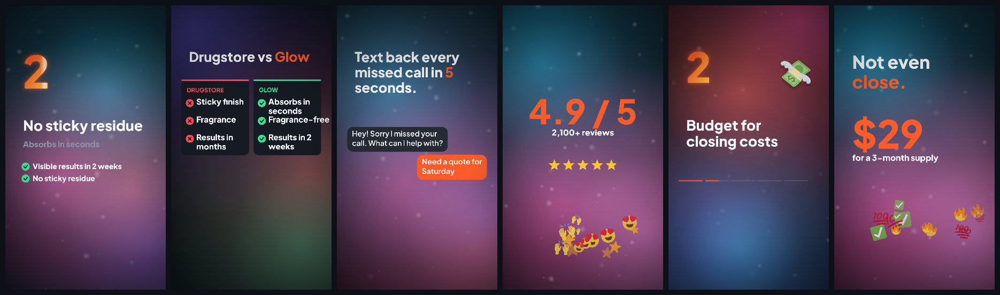
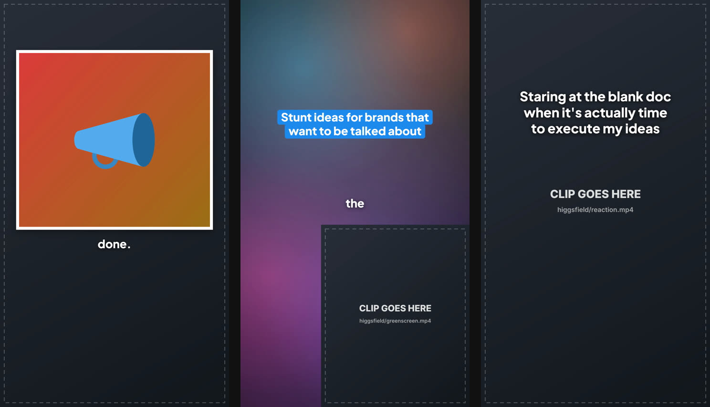

Describe the video to Claude. It writes a small code scene and Motion Factory Kit builds the MP4:
TikTok-native text, word-by-word captions from the creator's voice, product cards, reviews, CTAs,
music that ducks under the voice, sound effects, and hook variants to A/B test.
Every frame below is drawn by code. Tap a video for sound.
ShowreelAurora, glass, kinetic type, cuts on the beat, cinematic grade.ExplainerHook, push cuts, growing cards, music and effects.The core blocksComment sticker, product card, CTA, split, chat and more.UGC ad templateShown before any clips are added: drop in your Higgsfield footage.Product demoA chat-style walkthrough with a counted-up result.TimelineA request moving through steps.Street interview overlaysQuestion card, name lower-thirds, "n/50" counter and a poll bar, placed from the edit plan.
Twelve formats, spreadsheet-ready
3 reasons, us vs them, before/after, testimonials, problem/solution, listicle, unboxing, green screen, and the raw-footage edit. One row per ad.

Plus creator-native organic formats: a rapid list where the picture swaps on every spoken item, a title explainer with the creator over the thing itself, and a meme caption. Plain look, one word of caption at a time, title pills. Shown before any clips are added.

What's in the box
Everything a short-form video needs, driven by one command.
Raw footage in, 50 ads outClips transcribed with who's talking, Claude picks the best takes, cuts are word-exact with the "um"s gone, plus a delivery sheet.
Street audio, fixedWind, traffic and harsh "s" cleaned on every cut; a loud host and a quiet stranger levelled to match.
Follows the faceHorizontal footage reframed to vertical around the speaker automatically, panning when they move.
Client review loopA review page per batch: approve or flag each ad and hook with notes. Only the flagged ads get re-cut.
Spreadsheet batchesOne template plus one CSV: a folder of finished ads.
Cuts on the beatBeats detected from the music; narrated pieces time themselves from the voiceover.
Seven caption styles + emojiBold, box, karaoke, one-word pop, creator-native single words and more, with keyword emoji stickers.
Green screenCreators cut out and placed over posts, web pages or photos.
One command to a finished videoPicture, narration, captions, music, effects, loudness for social. node make.mjs
Higgsfield-readyAny clip, any size or frame rate. Its audio is mixed and its speech becomes captions.
32 building blocksTikTok-native pieces for UGC, street-interview overlays, plus explainer UI: notifications, chat, charts, phone frames.
Hook variantsWrite three hooks, get three MP4s. The cheapest A/B test there is.
Every sizeVertical by default, plus 4:5 feed, square and 16:9 YouTube versions in the same run.
Self-checkingEach build writes a PASS/FIX report and stills after every cut, so Claude fixes problems first.
Your brand in one fileColours, fonts, logo, URL. Every block and caption follows it.
Sound library12 effects and 3 music beds, original and free to use.
Start in five minutes
You need Node.js 18+, Python 3 and Claude Code.
git clone https://github.com/MetaCode2023/motion-factory-kit.git
cd motion-factory-kit
npm install
node make.mjs scenes/examples/ugc-ad.html # your first build# optional
export ELEVENLABS_API_KEY=... # narration + exact captions
claude mcp add --transport http higgsfield https://mcp.higgsfield.ai
Then run claude in the folder and ask:
I put a talking-head clip in assets/higgsfield/hook.mp4. Make a 15-second UGC ad for Glow Serum, $29. Give me 3 hooks, plus feed and YouTube versions.
Make a 20-second narrated explainer on why texting back missed calls beats voicemail.